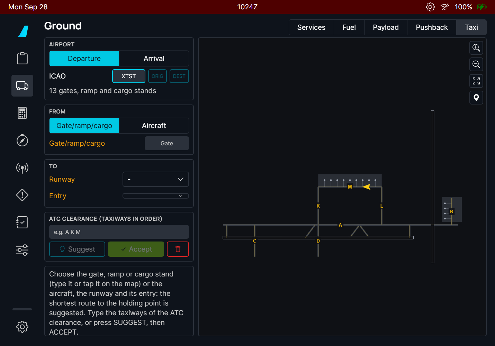
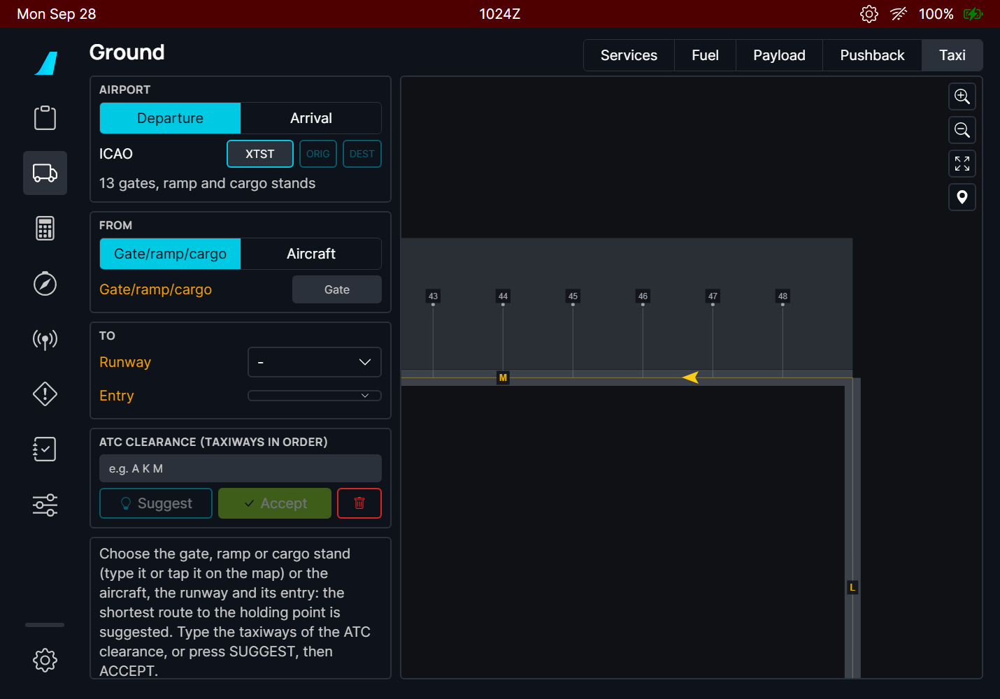

Before taxiing, the crew gets a taxi clearance from ATC such as "taxi to holding point runway 09 via M, K, A". On an unknown airport, following it on the chart is where mistakes happen: a wrong turn, a runway crossed without clearance. This page draws the route of the clearance on the airport map, lists the runways it crosses and stops it at the runway holding point.
The real A380 has no taxi routing: its OANS (the airport map on the ND) only lets the crew place green flags and white crosses (FCOM DSC-34-10-70-20), and MSFS has no datalink taxi clearance (D-TAXI). So the route is built on the flyPad, and the cockpit displays stay as the FCOM describes them. On the A380, the accepted route is marked on the OANS with those green flags (see "A380X: the accepted taxi route on the OANS" below).
| Part of the page | What it does |
|---|---|
| AIRPORT | Departure or Arrival, the ICAO code, ORIG / DEST buttons, the number of stands on the map. |
| FROM | Where the taxi starts: a gate / ramp / cargo stand (departure), a runway exit (arrival), or the aircraft. |
| TO | Where it ends: the runway and its entry (departure), or the gate (arrival). |
| ATC CLEARANCE | The taxiways of the clearance, in order. SUGGEST fills it with the shortest route, ACCEPT confirms it, the red bin clears the page. |
| Route box | The route as a clearance reads, its length, the taxiways and the runway crossings in red. |
| Map | The airport with the route, the runway entries (cyan), the holding point (amber bar), the aircraft (yellow). Drag to move, buttons to zoom and to fit the route. |


Gate names are found even when they are written differently on the map: "16" finds "016", spaces and dashes do not matter. If nothing matches, the airport map uses another name (for example a letter prefix): tap the gate on the map instead.

The Entry list shows every taxiway that enters the runway, in order from the threshold. The first one is the full length entry; the others show the runway length remaining from them, to check an intersection departure against your takeoff performance. On the map, the entries of the selected runway are the cyan dots with their names.


Type the taxiways of your clearance in the order ATC gives them, separated by spaces (commas and dashes work too). The route then follows them strictly, in that order:
SUGGEST copies the taxiways of the suggested route into the clearance field: a quick start when ATC clears you along the obvious way. ACCEPT confirms the route: the line turns solid. Any change (gate, runway, entry, clearance) takes the acceptance away.


Every runway the route crosses is circled in red on the map with its name, and listed in red under the route ("Crossing runway 01/19"). A runway crossing always needs its own ATC clearance: stop at the holding point before it and ask if you do not have it.


Choose Aircraft in FROM to start the route where the aircraft is, for example after a pushback, or when ATC changes the route while you taxi. The page takes the position when you select it; press Update to take it again. The route starts on the taxi line nearest to the aircraft and prefers its heading: it does not start by turning back if there is a way ahead.

"The aircraft is not at this airport" means the aircraft is more than 8 km from the airport of the page.



| Situation | What you should see |
|---|---|
| Airport entered, nothing else | The airport map, amber labels on the inputs still missing, the help text in the route box. |
| Start and end chosen | The suggested route, dashed, with its clearance text, length and crossings. |
| SUGGEST | The clearance field holds the taxiways of the suggested route; the route is a preview (dashed). |
| Clearance typed | The route follows the typed taxiways in order (dashed until accepted), or the red message "No route along these taxiways, in this order". |
| ACCEPT | Solid line, "Accepted route" in green (A380: green flags on the OANS). |
| Any input changed after ACCEPT | Back to a preview: accept again. |
| Departure to a runway with holding position lines | The route stops at the HOLD bar before the runway. |
| Two entries behind the same HOLD bar (e.g. RJTT 34R C2 and C3) | The same route to the holding point: the entries only differ after it. |
| Gate whose lead-in is another stand's line (e.g. RJTT gate 5 behind 5R) | The route leaves along that line: "Gate 5 → Gate 5R → W ...". |
| Runway without holding position lines on the map | The route ends on the runway entry itself and the box says "Runway 09" instead of "Holding point RWY 09". |
| The route crosses a runway | Red circle with the runway name on the map, red "Crossing runway" line. |
| Aircraft start, aircraft far from the airport | "The aircraft is not at this airport"; no route. |
| Leaving the page and coming back | Everything is kept, except an Aircraft start: press Aircraft or Update again. |
| Limitation | Why | What to do |
|---|---|---|
| Needs a Navigraph account. | The airport map (taxi lines, stands, holding points) exists only in the Navigraph airport database; MSFS does not give it to the aircraft. | Link your account in the flyPad settings. |
| Closed taxiways, one-way taxiways and NOTAMs are unknown. | The airport database has the lines painted on the ground, not their status of the day. | Type the taxiways of the ATC clearance: the route follows them. |
| The suggestion is the shortest route, not the usual one. | Airports have preferred flows (ATC habits, one-way loops) that are not in the data. | Always check against the clearance and the airport chart. |
| Some real airports have gaps in their taxi lines. | A lead-in line may stop a few metres short of the taxi line. Gaps up to 15 m between parts that are otherwise not connected are joined; larger ones are not. | If "No taxi line of the airport map connects the start to the end" appears, choose another start (the nearest taxiway, or the aircraft) or end. |
| Gate names follow the airport database. | The database may use names that differ from the gate signs. | Tap the gate on the map. |
| No route on the A380 OANS, only flags. | The A380 FCOM has no taxi route display; the flags are the FCOM way to mark points on the airport map. | - |
| The aircraft position is taken once. | The route is a plan to check, not a moving map that follows you. | Press Update after a change. |
| What you see | Why | What to do |
|---|---|---|
| SUGGEST and ACCEPT are greyed | There is no route yet: the gate is not found (amber label, no terminal next to the name), or the runway / entry / exit is missing. | Pick the gate from the suggestion buttons or tap it on the map; check the amber labels. |
| "No such name on the airport map" | No stand of the map has this name. | Tap the gate on the map. |
| "No taxi line of the airport map connects the start to the end" | The start and the end are on parts of the map that are not connected. | Start from the nearest taxiway (Aircraft), or choose another gate or entry. |
| "No route along these taxiways, in this order" | A taxiway of the clearance is misspelt, missing, or they do not connect in that order. | Check the clearance; press SUGGEST to see the names the map uses. |
| "Not in the Navigraph airport database" | Navigraph has no airport map for this airport. | - |
| # | Do this | Expected result |
|---|---|---|
| 1 | Navigraph account linked. A32NX or A380X parked at a gate of a large airport (e.g. RJTT). flyPad > Ground > Taxi, Departure, airport RJTT. | The airport map; the line under the airport gives the number of stands; amber labels on the missing inputs. |
| 2 | In FROM type your gate number. | Matching gates as buttons under the field ("16" also finds "016"); tap one, or tap the gate on the map. |
| 3 | In TO choose a runway; keep the proposed entry. | Dashed magenta route to the HOLD bar; the proposed entry is the first one reached without crossing a runway. |
| 4 | Open the Entry list. | All entries from the threshold: full length first, then the remaining length of each. |
| 5 | Press SUGGEST, then ACCEPT. | The clearance field holds the taxiways; after ACCEPT the line is solid and the box says "Accepted route". |
| 6 | Type another clearance with existing taxiways (e.g. a longer way round), without ACCEPT. | The route follows them in order, dashed, "Route along the clearance (not accepted)". |
| 7 | Type a taxiway that does not exist. | "No route along these taxiways, in this order". |
| 8 | Choose a runway the route must cross to reach. | Red circle with the runway name on the map and a red "Crossing runway" line. |
| 9 | FROM = Aircraft. | The route starts at the aircraft and goes ahead along its heading (no U-turn through the aircraft). |
| 10 | Press the locate button (pin) under the zoom buttons. | The map centres on the aircraft, stand names shown. |
| 11 | Arrival: DEST, runway, exit, gate. | Route from the exit to the gate; exits with their distance from the threshold. |
| 12 | Leave the page and come back. | Everything kept, except an Aircraft start. |
The A380 FCOM has no taxi route display: the OANS lets the crew mark points of the airport with green flags (DSC-34-10-70-20). When the crew accepts a route on the flyPad, the A380X marks it with those flags, so the route can be followed on the ND.
When you accept the route on the A380 flyPad, green flags appear on the OANS (the airport map on the ND) at the start of each taxiway of the route and at the gate or holding point. They are the crew flags of the FCOM ("to locate or mark a given point on the airport"), so you can remove them like any flag: click one and DELETE, or ERASE ALL SYMBOLS in the ND menu. Flags you placed yourself are never touched.

| Limitation | Why | What to do |
|---|---|---|
| Flags only, no route line. | The A380 FCOM has no route display on the OANS; flags are its way to mark points. | - |
| An Aircraft start is lost when leaving the Taxi page, so its flags go away when you come back. | The aircraft start is local to the page. | Select Aircraft again and ACCEPT. |
| # | Do this | Expected result |
|---|---|---|
| 1 | A380X at a gate, Navigraph linked, OANS showing the airport on the ND. flyPad Taxi page: route to a runway, ACCEPT. | Green flags on the OANS at the start of each taxiway of the route and at the holding point; the flyPad status says "green flags on the OANS". |
| 2 | Place your own flag on the OANS, then change the clearance on the flyPad (route no longer accepted). | The route flags go away; your own flag stays. |
| 3 | ACCEPT a new route. | Its flags replace those of the previous route. |
| 4 | Click a route flag on the OANS and DELETE, or ERASE ALL SYMBOLS in the ND menu. | The flags are removed like crew flags. |
Before taxi the crew needs the ground, tower and delivery frequencies of the airport. The taxi page shows them in a box laid out like the frequency box of an airport chart, for the origin, the destination or the airport of the page. The Navigraph airport map has no frequencies: they come from the sim's own airport data.
| Limitation | Why | What to do |
|---|---|---|
| The list is the sim's, not the chart's. | The chart's selection of frequencies is in no data the aircraft can read; MSFS lists all its frequencies. | Check the chart for the one to use. |
| No station names, no tuning. | The box is a reference, like the chart box. | Tune the RMP as usual. |
| # | Do this | Expected result |
|---|---|---|
| 1 | SimBrief OFP loaded in the flyPad (e.g. RJTT to another airport). Ground > Taxi, airport RJTT. Press Frequencies. | The FREQUENCIES box with ORIG RJTT selected and DEST; rows ATIS, APP, DEP, TWR, GND, DLV... with MHz values (three decimals). |
| 2 | Press DEST. | The frequencies of the destination. |
| 3 | Change the page airport to a third airport. | An "Airport" button appears and is selected; its frequencies. |
| 4 | Compare with the airport chart or the sim world map. | The same frequencies (the sim may list more). |
| 5 | Press X. | Back to the Frequencies button. |
With GSX installed, the ground services are GSX's, but the flyPad Services buttons called the sim's own vehicles. A GSX services switch now links the page to GSX through the GSX Remote API (version 2, local server on port 8744): the service buttons request the GSX services and show what GSX is doing. With the switch off the page works as before.
| Limitation | Why | What to do |
|---|---|---|
| Needs GSX with its Remote control server on. | The link uses the GSX Remote API (GSX 4). | Turn on the Remote control server in the GSX settings. |
| The four bugs of the first sim test (panel over the fuselage drawing, Board counter stuck at 0, passenger count not moving, switch not greyed without GSX) are fixed but not checked in the sim. | The fixes came after the test. | Report any of them if seen again. |
| Turning the link off leaves the GSX fuel and payload syncs on. | Only linking changes them. | Turn them off in Settings > 3rd Party Options if wanted. |
| The page keeps the classic FBW look on this branch. | The Material 3 redesign of the Services page is in core/efb-redesign. | - |
| # | Do this | Expected result |
|---|---|---|
| 1 | A380X (or A32NX) at a gate, GSX not running. flyPad > Ground > Services. | GSX panel under the GPU / cargo door group; switch greyed; amber "GSX not found: start GSX, with its Remote control server on (GSX settings)". |
| 2 | Start GSX with the Remote control server on. | "GSX is starting...", then "GSX found"; the switch becomes active. |
| 3 | Turn on GSX services. | Green "Service buttons linked to GSX..."; the Baggage Truck button disappears; the panel lists Deboarding, Boarding, Pushback, De-ice, Water, Lavatory, Cleaning; Settings > 3rd Party Options shows the GSX fuel and payload syncs on. |
| 4 | Press Jet Bridge (or Stairs). | Amber, status "On its way", then green while performed, "Done" at the end. No GSX menu pops up in the sim. |
| 5 | Press Fuel Truck. | Status and progress bar following "x / y kg"; the fuel set on the Fuel page. |
| 6 | Press Boarding on the panel (doors open). | The count of boarded passengers rises to the number set on the Payload page. |
| 7 | When GSX asks a question (e.g. the operator choice), answer it on the panel. | GSX continues with that answer. |
| 8 | Turn the switch off. | The Baggage Truck button is back; the buttons call the FBW services again. |
The FBW option GSX External Power Synchronization makes the external power available (L:A32NX_EXT_PWR_AVAIL) when the GSX GPU is connected or the jetway is requested or connected, until pushback. It only looked at GSX when a GSX state changed: enabling the option with the GPU or the jetway already connected did nothing until the next GSX change. It now checks GSX at once when it is enabled.
| Situation | What you should see |
|---|---|
| Option enabled with the GSX GPU or jetway already connected | External power available at once: EXT AVAIL on the overhead ELEC panel. |
| Option enabled before GSX connects | As before: available when the GPU connects. |
| Limitation | Why | What to do |
|---|---|---|
| With GSX 4, EXT AVAIL may already show before the option is enabled. | GSX 4 also sets the sim's own external power variable. | Watch L:A32NX_EXT_PWR_AVAIL:1 with a SimVar tool to see the sync itself. |
| # | Do this | Expected result |
|---|---|---|
| 1 | A380X (or A32NX) cold and dark at a GSX gate, the option OFF. Call the GSX GPU (or the jetway) and wait until it is connected. | L:A32NX_EXT_PWR_AVAIL:1 stays 0 (unless GSX 4 already made EXT AVAIL show, see Limitations). |
| 2 | Turn on GSX External Power Synchronization. | At once: L:A32NX_EXT_PWR_AVAIL:1 = 1, EXT AVAIL on the overhead ELEC panel (before: nothing until the next GSX state change). |
| 3 | Press EXT PWR. | The aircraft is powered by the ground power. |
| 4 | Request the GSX pushback. | The external power becomes unavailable, as before. |